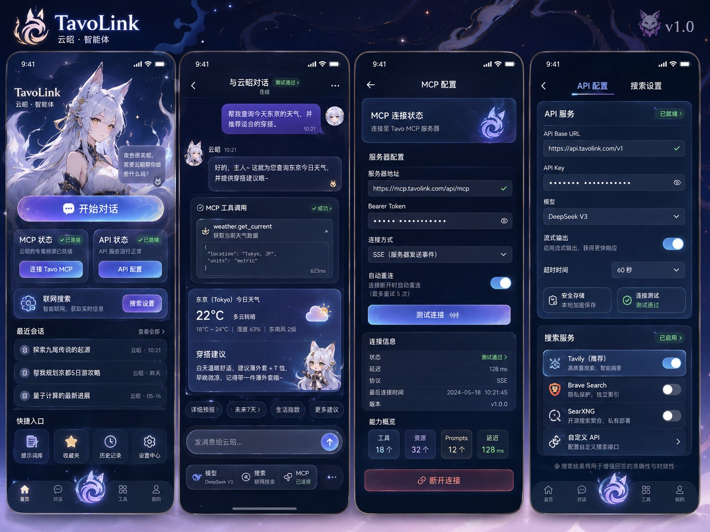

TavoLink · 云昭
二次元狐灵智能体 · Android / iOS · v1.0
实际 Flutter UI 视觉基准

云昭 Agent首页主视觉、对话身份与狐火状态统一。
Tavo MCP2026 stateless / direct JSON-RPC / 2025 fallback。
独立 APIOpenAI-compatible 模型、密钥与 Headers。
联网搜索Tavily / Brave / SearXNG / Custom。
